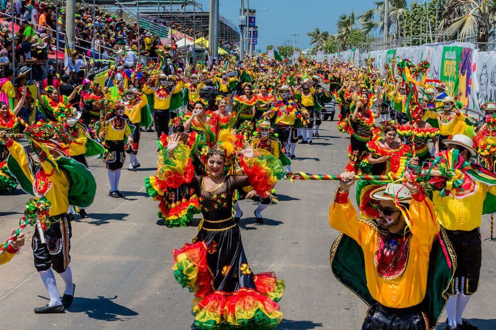

Carnaval de Barranquilla
Es un festival colorido y folclórico representativo del Atlántico colombiano. El Carnaval de Barranquilla celebra sus expresiones emblemáticas como su calidez y diversidad. Durante este festival, las personas escogen a su reina por barrios o sectores, incluyendo a su rey momo y reyes infantiles.
Asimismo, se realizan varios desfiles con carrozas y danzas típicas como la marimonda, el garabato, los monocucos, entre otros. También se hacen encuentros de letanías que son homenajes a la tradición oral de Colombia.